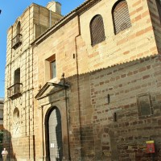

Historia
El origen de esta Hermandad se remonta al 11 de junio de 1718, fecha en la cual el padre José de San Antonio, provincial de los carmelitas descalzos de Andalucía Baja, otorgó carta de hermandad a un grupo de fieles que deseaban venerar a la imagen de Nuestra Señora de los Dolores, en el convento del Carmen. Un año después se convierte en cofradía, aprobándose que la salida procesional se realice el Martes Santo. A lo largo de los años siguientes, a esta devoción se van a unir otras más, cuyas imágenes ocuparían distintas capillas dentro de la iglesia conventual. A estas secciones dentro de la cofradía se les denominaba escuadras. Cada una de ellas elegía a su hermano mayor, pero estaban supeditadas a la Hermandad de los Dolores. Una de esas escuadras será la del Señor de la Paciencia, cuyo primer desfile procesional se produce en 1728. Las otras escuadras eran: San Juan, Jesús Caído (o Señor de las Misericordias), San Elías, San Pedro, el Prendimiento, la Entrada en Jerusalén y la Cena, que, al parecer, desapareció después para incorporarse la escuadra del Niño Jesús de los Dolores. En una fecha indeterminada dentro del mismo siglo XVIII la estación penitencial comienza a celebrarse el Miércoles Santo por la mañana.

La invasión napoleónica deja graves secuelas en el convento por lo que la Cofradía se traslada a la cercana iglesia parroquial de Santa María La Mayor. Nunca volvería al convento del Carmen ya que este es exclaustrado. A lo largo del siglo XIX van desapareciendo las distintas escuadras que conformaron la Hermandad primitiva. A principios del siglo XX tan solo perviven la Borriquita (que desfilaba el Domingo de Ramos), Jesús de la Paciencia, Jesús Caído y Nuestra Señora de los Dolores (que lo hacían el Miércoles Santo por la tarde). En 1918 se reforma la capilla donde era venerado Jesús de la Paciencia. Las obras son sufragadas por el conde de La Quintería, don Rafael Pérez de Vargas. En 1927 este noble costea un nuevo paso para la imagen. La Cofradía deja de desfilar durante los años de la II República. En 1936 son destruidas todas las imágenes y buena parte del resto de su patrimonio.
Tras la Guerra Civil, el propio conde de La Quintería se encarga de revitalizar la Hermandad, que va a constar de un solo titular, Nuestro Padre Jesús de la Paciencia, y que desfilará el Jueves Santo. La nueva imagen procesionará en 1941 sobre el antiguo paso, que fue salvado durante la guerra. D. Rafael Pérez de Vargas se va a convertir en el protector de la Cofradía hasta su fallecimiento en 1953. El desinterés creciente de su heredero y la grave crisis que afectó a las cofradías de Andújar en la década de los sesenta hace que un grupo de hermanos intente seguir hacia adelante con esta corporación, siendo de las pocas hermandades de Andújar que no desaparecieron. Durante muchos años desfilaron juntos Nuestro Padre Jesús de la Paciencia y Jesús Caído, hasta que la Hermandad de la Esperanza se hizo cargo de esta última imagen. En 1982, el cofrade Antonio Cáceres Barea donó la imagen de Nuestra Señora del Rosario. Realizó su primer desfile procesional en la Semana Santa de 1988. En el año 2002 se incorpora Nuestro Señor de la Paz en su Entrada Triunfal en Jerusalén, en un afán de la Hermandad por recuperar esta antigua escuadra de la extinta Cofradía de los Dolores del Carmen.

Algunos de los actos religiosos organizados por la Hermandad son: Rosario Vespertino en honor a la Señora, misa en el día de Cristo Rey para Nuestro Señor de la Paz, triduo para venerar a Jesús de la Paciencia, altar para la festividad del Corpus Christi y asistencia a la procesión del Santísimo, así como a la de la Inmaculada Concepción y la Virgen del Carmen del grupo parroquial de la iglesia de Santiago Apóstol, con quien se mantiene una especial relación de confraternidad.
En el año 2018 se conmemoró el tricentenario de su fundación. Para ello se organizaron varios actos: Rosario especial con la imagen de la Dolorosa, organización del Viacrucis de la Agrupación de Cofradías con el Señor de la Paz, publicación de un libro con la historia de la Hermandad, exposición de enseres y documentos en la antigua iglesia de Santa Marina, inauguración de un mural cerámico en una zona aneja al lugar que ocupó el antiguo convento, comida solidaria cuyos fondos se destinaron a Cáritas, y solemne quinario y procesión extraordinaria el 16 de junio de 2018 con la imagen de Nuestro Padre Jesús de la Paciencia.